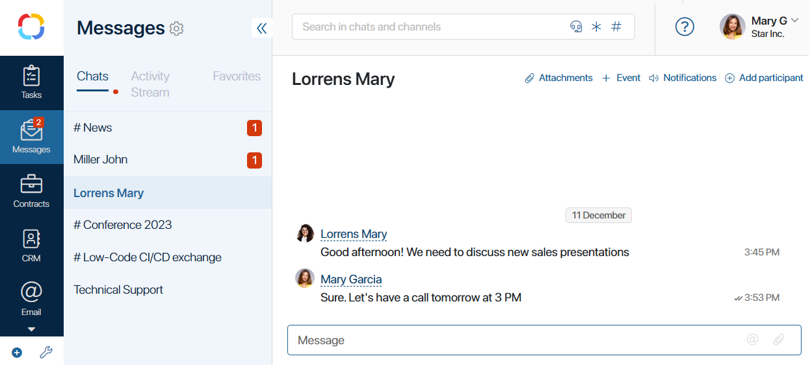
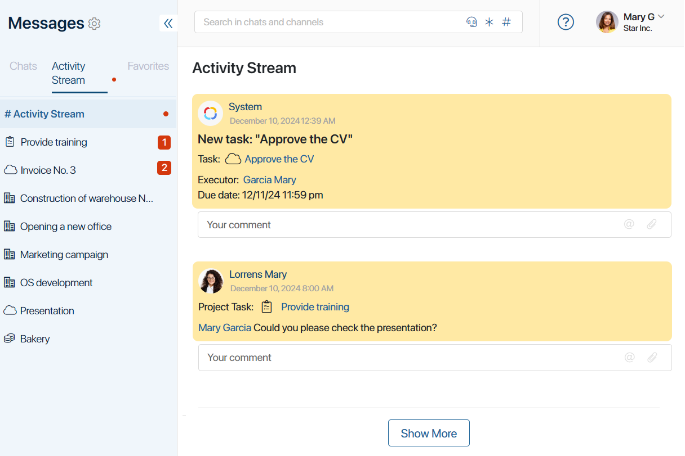

The object-based activity stream is a mode of the Messages workspace that groups information into three tabs: chats, objects, and favorites. In a separate tab, you can view all correspondence and notifications for each app item, task, or file. This is useful if employees often have discussions in the activity streams of objects, for example, when working with apps.
The object-based activity stream can be enabled as follows:
- For the whole company. The system administrator sets the default mode for all users in the Administration > Messages workspace.
- For a specific user. Each employee selects the mode in their profile settings.
Work with the object-based activity stream
The information in the Messages workspace is organized into three tabs: Chats, Activity Stream, and Favorites.
Chats
Personal and group chats as well as messages from channels and live chats are displayed here. You can chat with colleagues and comment on the news.

Read more in the Chats and Work with channels articles.
Activity stream
This tab displays:
- #Activity stream. Here you can see notifications and correspondence from associated activity streams of tasks, files, and app items.
Unread notifications and messages with new comments are always displayed at the top of the #Activity stream so you get important information timely. Viewed posts are organized chronologically, from newest to oldest. You can:

- Expand the list of new messages by clicking Show More, or see all the notifications and news you have received in chronological order by clicking Show All Messages. If you have unread messages, they are automatically marked as read.
- Leave comments and reactions, mark posts as important, mention users, attach files, and assign tasks in the same way as in the standard #Activity stream display.
- Disable pop-up notifications by clicking the speaker icon in the upper right corner.
- Mark all messages in the #Activity stream as read by clicking .
- A list of tasks, files, and app items with recent messages.
Select an item to see related news and notifications. Recent notifications and messages with new comments will be displayed at the top. Viewed posts will be organized chronologically, from newest to oldest. You can:
- Expand the list of new messages by clicking Show More, or see all the notifications and news you have received in chronological order by clicking Show All Messages. If you have unread messages, they are automatically marked as read.
- Leave a comment or reaction and mark messages as important by clicking the icon next to it.
- Start a new discussion in the object activity stream by entering text in the Message bar at the bottom of the page and pressing Enter.
- Go to the object page by clicking the icon next to its name.
You can perform additional actions on an object by right-clicking on it:
- Add to Favorites. Mark the object and all its messages as important. To remove it from your favorites, select the corresponding item in its context menu.
- Hide. Temporarily hide the object from the list. It will reappear if you receive new messages related to the object.
- Hide Objects from List. Remove the object from the list to receive notifications about it only on the #Activity Stream page. To display the object again, go to the #Activity Stream page and right-click the associated message, select Show in Object List.
- Hide App, Process, or Task from List. Disable receiving messages and notifications in the object-based activity stream, not only for a specific object but for the entire app, process, or task. Messages for them will be displayed only on the #Activity Stream page. This action does not apply to files.
To receive app, process, and task messages in the object-based activity stream again, in the user profile settings, click the Messages tab and remove the object from the list of exceptions.
Favorites
Chats, objects, and messages from channels and activity streams that you have marked important are displayed here.
To remove a message from your favorites, click the icon next to it. To remove a chat or object, use its context menu and select Delete from Favorites.
Found a typo? Select it and press Ctrl+Enter to send us feedback